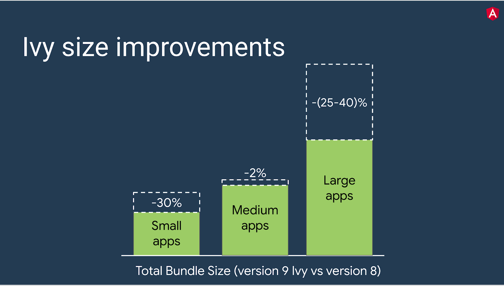

Top 10 New Features Of Angular 9
Angular 9: Features and Fixes
So what's new in Angular 9? In this new update, all the existing drawbacks have been modified. Lot of factors have affected the previous versions of Angular. For example, large bundle files that have negatively impacted download times, application performance and user experience. So what the Angular team is doing to solve the large size of the final bundles? Enter Ivy!
Let's discuss IVY and all the Angular 9 features in detail, shall we?
Default Ivy compiler
Angular 9 incorporates a change in the core structure of the entire framework. All the applications will use the IVY renderer as the default compiler. Apps built with IVY are more efficient. To top it all, the IVY compiler in Angular 9 fixes several bugs and has additional features to it as well. Let's see how:
Improves the bundle sizes
A NoSQL database, on the other hand, is self-describing, so does not require a schema. Nor does it enforce relations between tables in all cases. All its documents are JSON documents, which are complete entities that one can readily read and understand. NoSQL refers to high-performance, non-relational databases that utilize a wide variety of data models. These databases are highly recognized for their ease-of-use, scalable performance, strong resilience, and wide availability. NoSQL database examples include MongoDB, MarkLogic, Couchbase, CloudDB, and Amazon’s Dynamo DB.
Major Differences
There are many differences between SQL and NoSQL, all of which are important to understand when making a decision about what might be the best data management system for your organization. These include differences in:
- Language
- Scalability
- Community
- Structure
The Language
One of the major differences between SQL relational and NoSQL non-relational databases is the language. As mentioned, SQL databases use Structured Query Language for defining and manipulating data. This allows SQL to be extremely versatile and widely-used — however, it also makes it more restrictive. SQL requires that you use predefined schemas to determine the structure of your data before you even begin to work with it. Your data must also follow the same structure as well, which can entail significant upfront preparation along with careful execution.
A NoSQL database features a dynamic schema for unstructured data and the data can be stored in many different ways, whether it be graph-based, document-oriented, column-oriented, or organized as a KeyValue store. This extreme flexibility allows you to create documents without first having to carefully plan and define their structure, add fields as you go, and vary the syntax from database to database. It also allows you to give each document its own unique structure, providing you with more freedom overall.
Efficiency and Normalization
One thing that Oracle stressed was the relationship between objects. They said that all data should be normalized. This means no data should be stored twice. So instead of putting, for example, the school address in every student record, it would be better to maintain a school table and store the address there. NoSQL databases have gotten rid of this constraint, to a certain degree.
Disk space was expensive in the 1970s and so was memory, so normalization made sense. But it can take some time to do a joint operation to bring together a record that is stored in different tables into one logical unit. It also requires the overhead of maintaining index files and writing to those as data is added or deleted
NoSQL databases say all that does not matter as disk space and memory are cheap. Proponents of that say it is okay to, regarding the aforementioned case, put the school address in with the student. This speeds data retrieval time and makes coding easier.
Conclusion
No matter what field you are in, choosing the correct database for your organization is an important decision. NoSQL databases are quickly becoming a major part of the database landscape today, and they are proving to be a real game-changer in the IT arena. They have numerous benefits, including lower cost, open-source availability, and easier scalability, which makes NoSQL an appealing option for anyone thinking about integrating in Big Data. They are a young technology, however, which makes them slightly more volatile.
On the other hand, SQL databases have proven themselves for over 40 years and use long-established standards that are well defined. They have a huge community of experts behind them, and the opportunity for collaboration is limitless.
Overall, the decision of using SQL versus NoSQL for business is not entirely black and white; it requires some comparing and contrasting to determine which database best fits your specific needs. With the proper amount of research and preparation, however, you will ensure that the database you choose provides an efficient and streamlined management system for your organization.